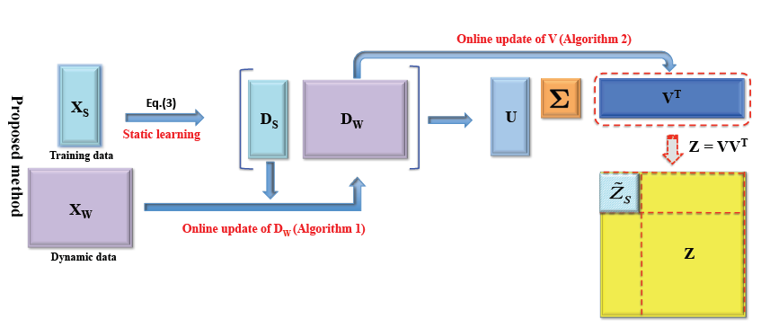
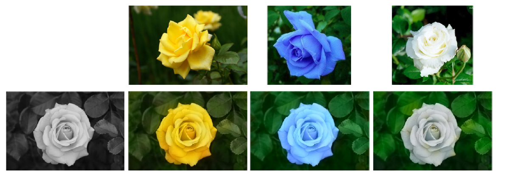
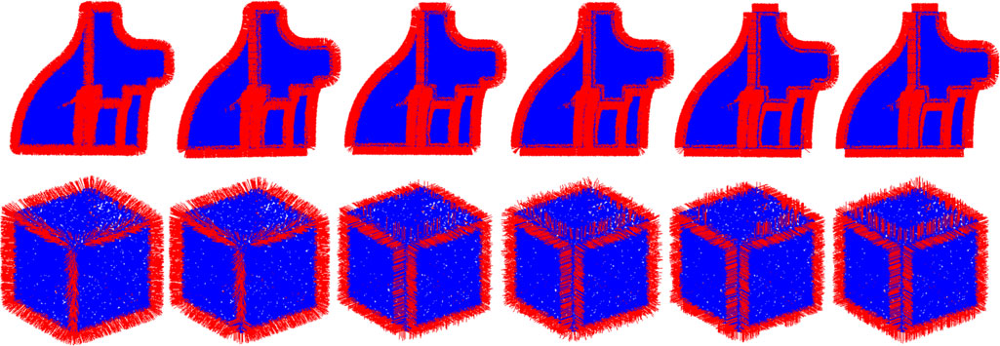
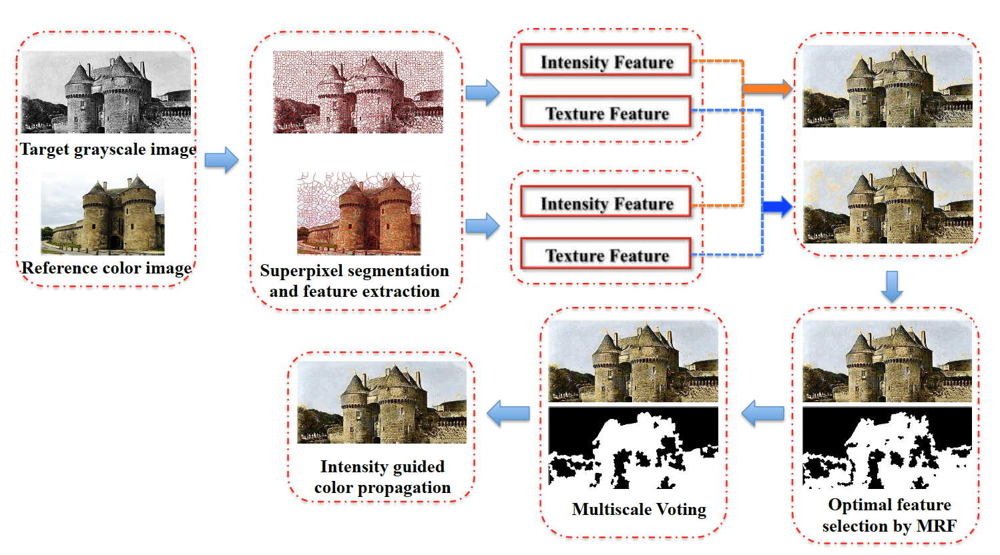
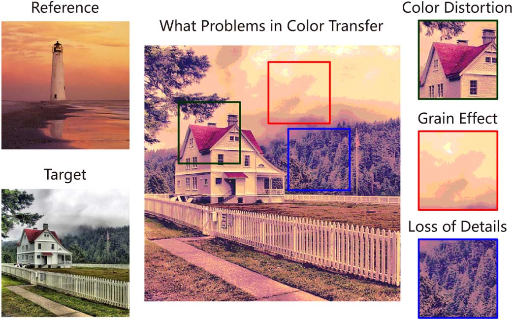
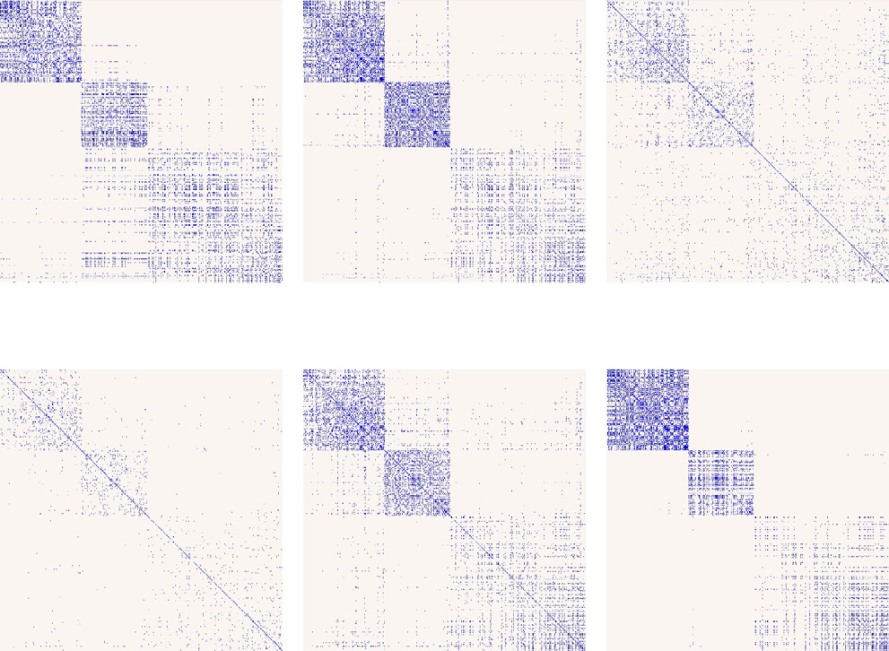

Associate Professor
School of Educational Information Technology
Central China Normal University
Contact Info:
Room 9649, No. 9 Building
Email: bolimath at gmail dot com
Research Experience
Research Interest:
My research focuses on machine learning for computer vision and pattern recognition. My research topics are:

Online low-rank representation learning for joint multi-subspace recovery and clustering
IEEE Transactions on Image Processing, vol. 27(1), pp. 335-348, 2018.
SCI, IF: 5.071, CCF-A
[paper] [doi]

Example-based image colorization using locality consistent sparse representation
IEEE Transactions on Image Processing, vol. 26(11), 5188-5202, 2017.
SCI, IF: 5.071, CCF-A
[paper]

Multi-Normal Estimation via Pair Consistency Voting
IEEE Transactions on Visualization and Computer Graphics, to appear.
SCI, IF: 3.078, CCF-A
[paper]

Example-based image colorization via automatic feature selection and fusion
Neurocomputing, vol. 266, 687-698, 2017.
SCI, IF: 3.241
[paper][doi]

Corruptive artifacts suppression for example-based color transfer
IEEE Transactions on Multimedia, Vol. 16, No. 4, 988-999, 2014.
SCI, IF: 3.977
[paper][doi]

Locality-constrained nonnegative robust shape interaction subspace clustering and its applications
Digital Signal Processing, Vol. 60, 113-121, 2017.
SCI, IF: 2.241
[paper][doi]